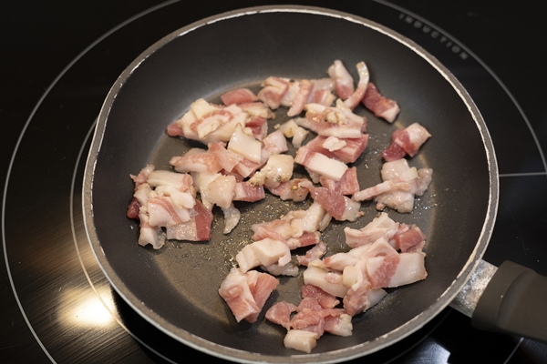
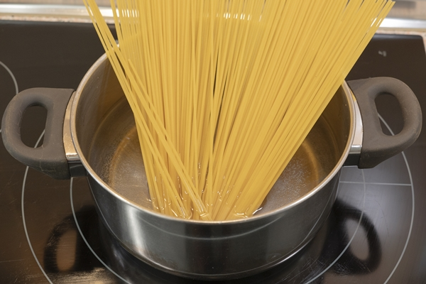
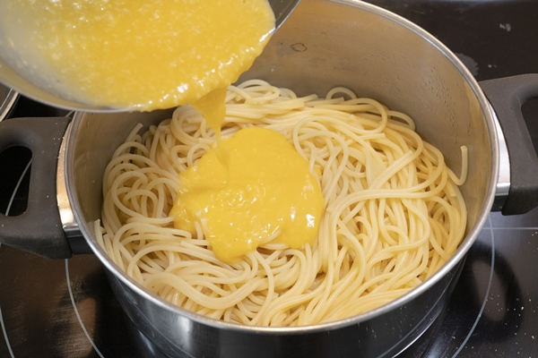

Los espaguetis a la carbonara son de las recetas más tradicionales que tenemos de gastronomía italiana y hoy vamos a preparar su receta con huevos, es la receta original de verdad porque en España (ahora ya no tanto) siempre se ha hecho con nata.
Se llama salsa carbonara porque cuando los servimos tienen mucha cantidad de pimienta y esa pimienta asemeja al carbón, de ahí que se llame «carbonara» por el carbón. Otra receta de pasta con mucha pimienta que también me encanta son los espaguetis cacio e pepe, muy típicos de Roma.
- 200 gramos de espaguetis
- 100 gramos de guanciale
- 50 gramos de pecorino o parmesano
- 3 yemas de huevo y 1 huevo entero
- Sal
- Pimienta negra molida
Ingredientes:
Cómo hacer espaguetis a la carbonara
1- Comenzamos en una sartén sin aceite a cocinar el guanciale. Lo debemos cocinar a fuego medio hasta que se dore y suelte toda la grasa. No tires la grasa porque parte de ella la vamos a usar.

2- Una vez dorados, retiramos y reservamos
3. Mientras tanto vamos cociendo los espaguetis como indique el fabricante en abundante agua con sal.

4- En un bol, ponemos el queso rallado, las 3 yemas y el huevo entero. Batimos muy bien.
5- Añadimos una cucharada del agua de cocción, un par de cucharadas de la grasa del guancile y mezclamos hasta que quede una pasta. Esta la reservamos hasta que tengamos los espaguetis cocidos.
6- Colamos las espaguetis y los añadimos otra vez a la sartén. Dejamos atemperar un minutos y seguidamente le añadimos la crema y con el propio calor se va a ir haciendo esa crema tan característica. Lo dejamos atemperar porque si tenemos el fuego encendido la crema se va a cuajar y no queremos eso.

7- Servimos con el guancile por encima y con una buena cantidad de pimienta negra molida.